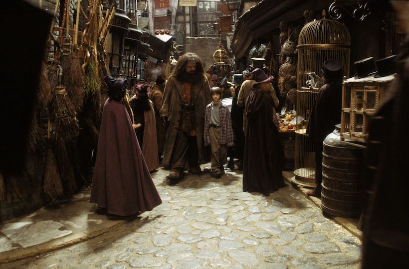

Первая книжка о Гарри Поттере еще не о борьбе мальчика с Большим Злом и его представителем Воландемортом.
Она просто о том, как одинокий сирота, живущий у противных родственников, внезапно оказывается волшебником,
попадает в закрытую школу магии и обретает настоящих друзей, всегда готовых помочь в трудную минуту. Наш герой
становится увереннее, взрослее, он умеет постоять за себя и понимает, что Хогвартс – его настоящая семья и настоящий
дом.
Вот именно об этом и рассказывает книжка «Гарри Поттер и Философский камень» - о важности крепкой дружбы для
любого человека.
Глава 1 МАЛЬЧИК, КОТОРЫЙ ВЫЖИЛ
Мистер и миссис Дурсль проживали в доме номер четыре по Тисовой улице и всегда с гордостью заявляли,что они,
слава богу, абсолютно нормальные люди. Уж от кого-кого, а от них никак нельзя было ожидать, чтобы они попали в
какую-нибудь странную или загадочную ситуацию. Мистер и миссис Дурсль весьма неодобрительно относились к любым
странностям, загадкам и прочей ерунде.
Мистер Дурсль возглавлял фирму под названием «Граннингс», которая специализировалась на производстве дрелей.
Это был полный мужчина с очень пышными усами и очень короткой шеей. Что же касается миссис Дурсль, она была тощей
блондинкой с шеей почти вдвое длиннее, чем положено при ее росте. Однако этот недостаток пришелся ей весьма
кстати, поскольку большую часть времени миссис Дурсль следила за соседями и подслушивала их разговоры. А с
такой шеей, как у нее, было очень удобно заглядывать за чужие заборы. У мистера и миссис Дурсль был маленький сын по
имени Дадли, и, по их мнению, он был самым чудесным ребенком на свете.
Заметка 1 В половине девятого мистер Дурсль взял свой портфель, клюнул миссис Дурсль в щеку и попытался
на прощанье поцеловать Дадли, но промахнулся, потому что Дадли впал в ярость, что с ним происходило довольно
часто. Он раскачивался взад-вперед на стульчике, ловко выуживал из тарелки кашу и заляпывал ею стены.
— Ух, ты моя крошка, — со смехом выдавил из себя мистер Дурсль, выходя из дома.
На углу улицы мистер Дурсль заметил, что происходит что-то странное, — на тротуаре стояла кошка и внимательно
изучала лежащую перед ней карту. В первую секунду мистер Дурсль даже не понял, что именно он увидел, но затем,
уже миновав кошку, затормозил и резко оглянулся. На углу Тисовой улицы действительно стояла полосатая кошка,
но никакой карты видно не было.
Глава 2 ИСЧЕЗНУВШЕЕ СТЕКЛО
Почти десять лет прошло с того утра, когда Дурсль обнаружили на своем пороге невесть откуда взявшегося
племянника, но Тисовая улица за это время почти не изменилась. Солнце вставало над теми же ухоженными садиками
и освещало туже самую бронзовую четверку на входной двери дома Дурслей; оно пробиралось в гостиную, оставшуюся
почти неизменной с того вечера, когда мистер Дурсль смотрел по телевизору пророческий выпуск новостей.
Только стоящие на камине фотографии в рамках свидетельствовали о том, что с тех пор прошло немало времени.
Десять лет назад на фотографиях было запечатлено нечто, напоминавшее большой розовый мяч в разноцветных
чепчиках, но с тех пор Дадли Дурсль вырос, и теперь на фотографиях был крупный светловолосый мальчик, сидящий
на своем первом велосипеде, кружащийся на ярмарочной карусели, играющий с отцом в компьютерные игры, мальчик в
объятиях целующей его матери. Однако ничто на этих фотографиях не говорило о том, что в доме живет еще один
ребенок.
Тем не менее Гарри Поттер все еще жил здесь, и в настоящий момент он крепко спал, хотя спать ему оставалось
недолго.
Заметка 2 Тетя Петунья уже проснулась и подходила к его двери, и через мгновение утреннюю
тишину прорезал ее пронзительный визгливый голос:
— Подъем! Вставай! Поднимайся! Гарри вздрогнул и проснулся. Тетя продолжала барабанить в дверь.
— Живо! — провизжала она.
Глава 3 ПИСЬМА НЕВЕСТЬ ОТ КОГО
Гарри никогда еще так не наказывали, как за историю с бразильским удавом. Когда ему наконец разрешили выходить
из чулана, уже начались летние каникулы, а Дадли уже успел сломать новую видеокамеру, разбил самолет с
дистанционным управлением и, в первый раз сев на новый гоночный велосипед, умудрился врезаться в миссис Фигг,
переходившую Тисовую улицу на костылях, и сбить ее с ног, так что она потеряла сознание.
Гарри был рад, что занятия в школе закончились, но зато теперь ему негде было скрыться от Дадли и его дружков,
которые каждый день приходили к нему домой. И Пирс, и Деннис, и Малкольм, и Гордон — все они были здоровыми и
безмозглыми, но Дадли был самым здоровым и самым безмозглым, и потому именно он считался их предводителем и
решал, что будет делать вся компания. И вся компания соглашалась с тем, что следует заняться любимым спортом
Дадли — охотой на Гарри.
По этой причине Гарри проводил как можно больше времени вне дома, шатаясь неподалеку и думая о том, что не так
уж много времени осталось до конца каникул, откуда ему светил крошечный лучик надежды. В сентябре он должен
был пойти в среднюю школу и наконец-то расстаться с Дадли. Дадли перевели в частную школу, где когда-то учился
дядя Вернон, — в «Вонингс». Кстати, туда же устроили и Пирса Полкисса. А Гарри отдали в самую обычную
общеобразовательную школу, в «Хай Камероне». Дадли это показалось невероятно смешным.
Как-то в июле тетя Петунья повезла Дадли в Лондон, чтобы купить ему фирменную форму школы «Вонингс», а Гарри
отвела к миссис Фигг. Как ни странно, теперь у миссис Фигг стало куда приятнее, чем раньше. Выяснилось, что
она сломала ногу, наступив на одну из своих кошек, и с тех пор уже не пылает к ним такой страстной любовью, как
прежде. Так что она не показывала Гарри фотографии кошек, и даже разрешила ему посмотреть телевизор, но зато
угостила шоколадным кексом, который, судя по вкусу, пролежал у нее в шкафу по крайней мере десяток лет.
Заметка 3
Глава 4 ХРАНИТЕЛЬ КЛЮЧЕЙ
БУМ! — снова раздался грохот. Дадли вздрогнул и проснулся.
— Где пушка? — с глупым видом спросил он. Позади них громко хлопнула дверь, отделявшая одну комнату от
другой, и появился тяжело дышавший дядя Верной. В руках у него было ружье — так что теперь стало
ясно, что лежало в том длинном пакете, о содержимом которого он никому не рассказал.
За дверью все стихло. И вдруг…
В дверь ударили с такой силой, что она слетела с петель и с оглушительным треском приземлилась посреди
комнаты.
Заметка 4
В дверном проеме стоял великан. Его лицо скрывалось за длинными спутанными прядями волос и огромной
клочковатой бородой, но зато были видны его глаза, маленькие и блестящие, как черные жуки. Великан протиснулся в хижину и
пригнулся, но голова его все равно касалась потолка—уж слишком он был велик Он наклонился, поднял дверь и
легко поставил ее на место. Грохот урагана, доносившийся снаружи, сразу стал потише. Великан повернулся и
внимательно оглядел всех, кто был в хижине.
— Ну чего, может, чайку сделаете, а? Непросто до вас добраться, да... устал я...
Великан шагнул к софе, на которой сидел застывший от страха Дадли.
— Ну-ка подвинься, пузырь, — приказал незнакомец.
Дадли взвизгнул и, соскочив с софы, рванулся к вышедшей из второй комнаты матери и спрятался за нее. Тетя
Петунья в свою очередь шагнула за спину дяди Вернона и пугливо пригнулась, словно надеялась, что за мужем ее не будет
видно.
— Ну-ка подвинься, пузырь, — приказал незнакомец.
Дадли взвизгнул и, соскочив с софы, рванулся к вышедшей из второй комнаты матери и спрятался за нее. Тетя
Петунья в свою очередь шагнула за спину дяди Вернона и пугливо пригнулась, словно надеялась, что за мужем ее не будет
видно.
Глава 5 КОСОЙ ПЕРЕУЛОК
«Это был сон,—твердо сказал он себе. — Мне приснилось, что ко мне приходил великан по имени Хагрид, чтобы сообщить мне, что я пойду учиться в школу волшебников. Когда я открою глаза, то окажусь дома в своем чулане».
Гарри вскочил с постели. Счастье распирало его изнутри, словно он проглотил воздушный шар. Гарри подошел к окну и распахнул его. Сова влетела в комнату и уронила газету прямо на Хагрида, но тот не проснулся. Затем сова спикировала на пол и набросилась на куртку Хагрида.
Великан внимательно посмотрел на него, словно напоминая о вчерашнем уговоре. Гарри вдруг понял, что ему, всегда такому вежливому и обращающемуся на «вы» ко всем старшим, Заметка 5 будет легко называть Хагрида на «ты». Потому что Хагрид относился к нему с большей теплотой, чем кто бы то ни было, и вел себя как друг.